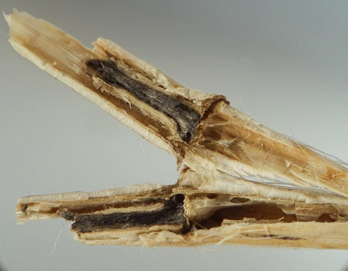
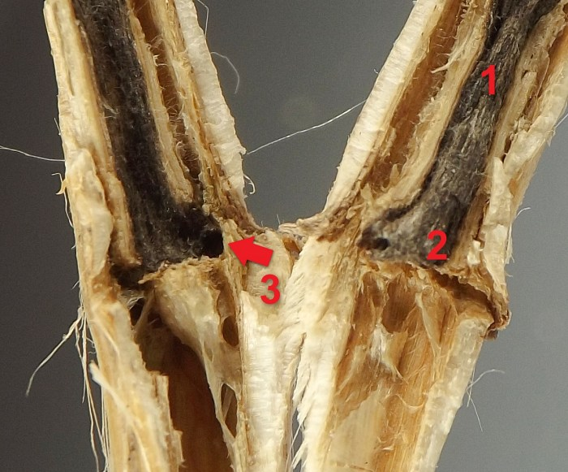
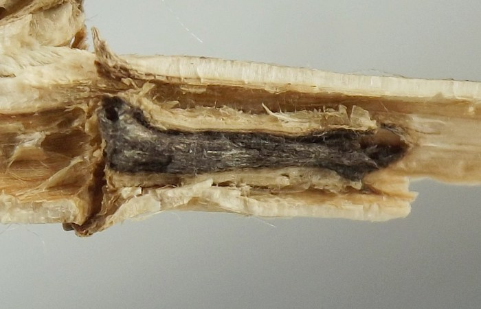
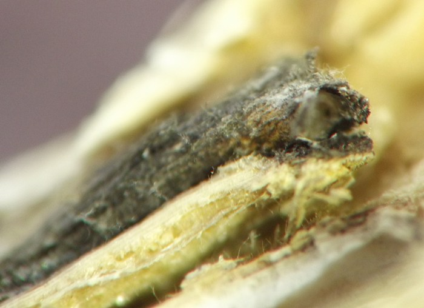
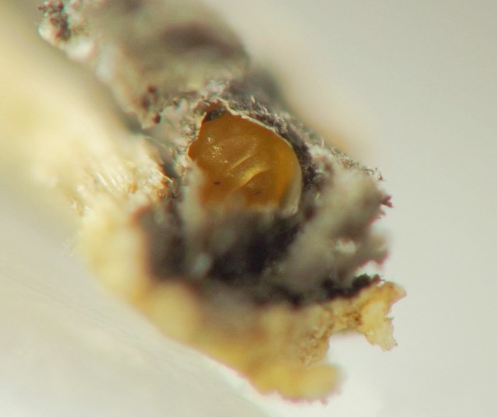
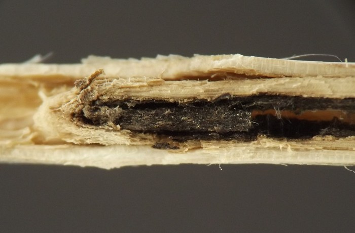
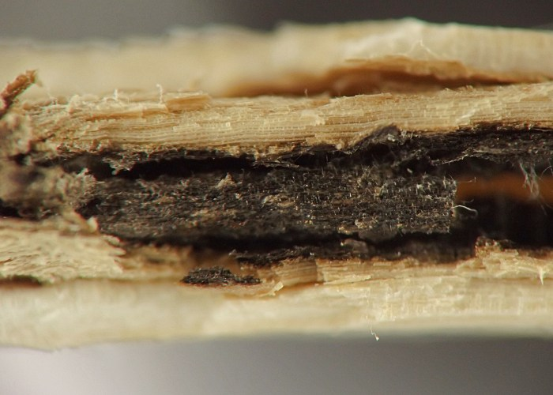

Local feeder (Diptera: Cecidomyiidae) in stems of Asclepias
| Record no.: | 0086 |
|---|---|
| Feeding guild: | Local feeder in stem |
| Taxonomy: | Diptera: Cecidomyiidae: cf. Neolasioptera sp. |
| Stages observed: | trace, larva |
| Distribution observed: | IA |
| Hosts in Asclepias: | A. incarnata (swamp milkweed) |
The bright orange larva of this cecidomyiid overwinters in a locally blackened area in the pith of the dead stem. The blackening of the pith is apparently due to the presence of a symbiotic fungus (see Gagné (1989) for more on such insect-fungus relationships).
In examples I examined in winter 2022-2023, the affected areas occurred at nodes in the upper stem, and each larva (one per node) was ensconced within a cylindrical chamber or cocoon with a curved anterior portion leading to the outer wall of the stem. I did not record any significant swelling of the affected nodes.
However, in winter 2025-2026 I came across an apparently inhabited plant in which the inhabited nodes occurred on lateral branches and showed noticeable swelling relative to the unaffected tissue, resulting in subtle spindle-shaped galls. In one of these galls, a tiny oval hole could be seen in the outer wall of the stem, which was covered with a material that looked like silk from what I was able to discern. The size and shape of the hole compared favorably with Neolasioptera exit holes I've noted in stems of other host plants. If indeed an exit hole for the gall midge larva inside, the apparent fact that it was made before winter and then covered with a layer of silk was consistent with my aforementioned stem dissections from 2023 showing that the larval cocoons have a curved portion that connects with the outer wall of the stem. The larva must construct the exit hole, and curved cocoon leading to it, before winter and obscure the hole with silk, spend the winter in the cocoon, then pupate in the cocoon in spring, with the pupa pushing out through the silk operculum upon the adult's emergence.

 Prev
Prev
{kind=link}
{kind=link}

{kind=link}

{kind=link}

{kind=link}

{kind=link}

{kind=link}

Coll. 05/07/23, photos same day (01-07). All specimens above from Iowa, USA.
- Gagné, R.J. 1989. The plant-feeding gall midges of North America. Cornell University Press: Ithaca, New York.[return to in-text citation]
Page created: February 10, 2026. Last update: none